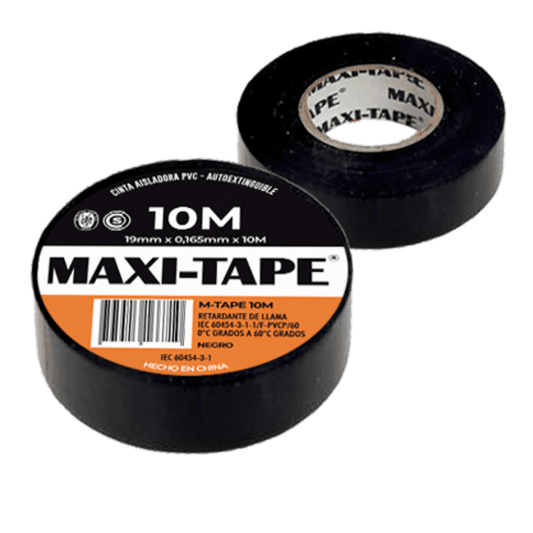
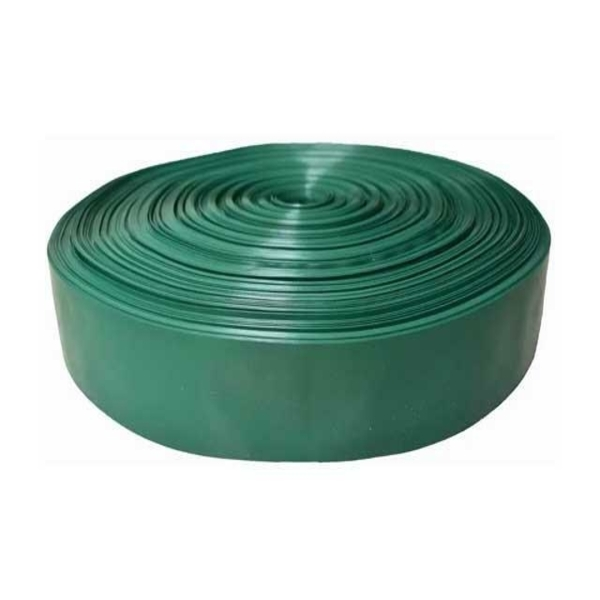
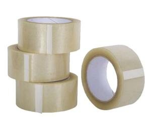

Cintas
Categorías

Cinta aisladora
- Marca: Vini tape.
- Usos: Aislar cables.
- Largo: 10m.
- Origen: China.
- Colores: Blanco, negro, rojo, azul.

Cinta cerco
- Marca: Fgp.
- Usos: Cerrar cercos.
- Medidas: 5 y 6.3cm.
- Origen: China.
- Colores: Verde, negro.
Cinta doble faz
- Marca: Tacsa.
- Usos: Pegar de dos lados.
- Medidas: 1, 2, 2.5 cm x9m.
- Origen: China.
- Color: Blanco, transparente.

Cinta embalar
- Marca: Adelbras.
- Usos: Embalar.
- Medidas: 5cm x 40m.
- Origen: Argentina.
- Colores: Marrón, transparente.
Cinta papel
- Marca: Adelbras.
- Usos: Proteger de pintura, pegar papeles.
- Material: Papel.
- Origen: China.
- Medidas: 18, 24, 36, 48mm.
Cinta multiuso
- Marca: Duc-Tape.
- Usos: Reparar bolsones y otros materiales.
- Medidas: 5cm x 5m.
- Origen: China.
- Colores: Negro, blanco, azul, plata.
Cinta peligro
- Marca: 3m.
- Usos: Marcar una zona de peligro o construcción.
- Material: Plástico.
- Origen: Argentina
- Color: Rojo y blanco.
Cinta sillón
- Marca: Generico.
- Usos: Reparar reposeras.
- Medidas: 5cm.
- Origen: China.
- Colores: Rojo, naranja, azul, celeste, violeta, amarillo.